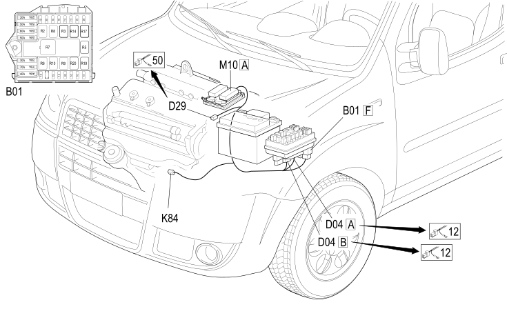

51 INJECTION BRIDGE / ENGINE SERVICES
- Path
- Electrical equipment > 2 WIRING > 51 INJECTION BRIDGE / ENGINE SERVICES
- Kind
- wiring harness
- Applies to
- engines: 1.4 8v; production: da 12/03; only with equipment: MY 2005
- Interactive page
- https://sloeber94.github.io/elrnDB-fDbl/en/#/223004083
Applies to: engines: 1.4 8v; production: da 12/03; only with equipment: MY 2005

Topics that link to this page (24)
- A001A BATTERY (INJECTION BRAID / ENGINE SERVICES)
- B001F JUNCTION UNIT (INJECTION BRAID / ENGINE SERVICES)
- B001F JUNCTION UNIT (INJECTION BRAID / ENGINE SERVICES)
- B037 SPARK PLUGS MAXI FUSE (INJECTION BRAID / ENGINE SERVICES)
- C001A BATTERY EARTH (INJECTION BRAID / ENGINE SERVICES)
- C060 INJECTION ECU EARTH (INJECTION BRAID / ENGINE SERVICES)
- D004A FRONT/ENGINE JUNCTION (INJECTION BRAID / ENGINE SERVICES)
- D004A FRONT/ENGINE JUNCTION (INJECTION BRAID / ENGINE SERVICES)
- D004B FRONT/ENGINE JUNCTION (INJECTION BRAID / ENGINE SERVICES)
- D004B FRONT/ENGINE JUNCTION (INJECTION BRAID / ENGINE SERVICES)
- D028 ENGINE CABLES/RADIATOR CABLE COUPLING (INJECTION BRAID / ENGINE SERVICES)
- D029 ENGINE CABLES/ENGINE SERVICES CABLE COUPLING (INJECTION BRAID / ENGINE SERVICES)
- D029 ENGINE CABLES/ENGINE SERVICES CABLE COUPLING (INJECTION BRAID / ENGINE SERVICES)
- K040 LAMBDA SENSOR (INJECTION BRAID / ENGINE SERVICES)
- K084 SPEEDOMETER SENSOR (INJECTION BRAID / ENGINE SERVICES)
- K084 SPEEDOMETER SENSOR (INJECTION BRAID / ENGINE SERVICES)
- K187 FAP DIFFERENTIAL PRESSURE SENSOR (INJECTION BRAID / ENGINE SERVICES)
- K190 DOWNSTREAM PARTICULATE FILTER TEMPERATURE SENSOR (DPF) (INJECTION BRAID / ENGINE SERVICES)
- M010A ENGINE MANAGEMENT ECU (INJECTION BRAID / ENGINE SERVICES)
- M010A ENGINE MANAGEMENT ECU (INJECTION BRAID / ENGINE SERVICES)
- M010A ENGINE MANAGEMENT ECU (INJECTION BRAID / ENGINE SERVICES)
- M010C ENGINE MANAGEMENT ECU (INJECTION BRAID / ENGINE SERVICES)
- M015A PLUG PREHEATING CONTROL UNIT (INJECTION BRAID / ENGINE SERVICES)
- M015B PLUG PREHEATING CONTROL UNIT (INJECTION BRAID / ENGINE SERVICES)